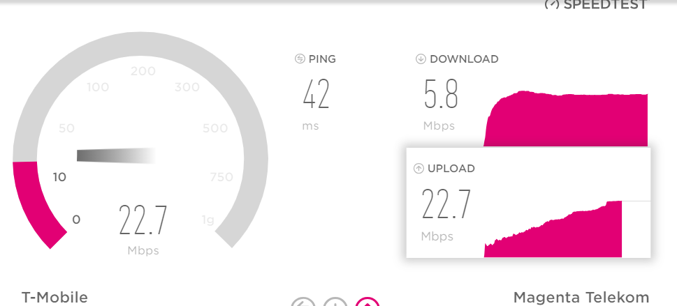

Ich bin verärgert über Mein Homenet LTE Turbo, 3,03Mbit/s soll doch wohl ein Scherz sein...
Wäre ja kein Problem wenn das nur hin und wieder mal vorkommen würde.
Um diese Situation zu klären, dachte ich mir "Hotline anrufen". Ja kann man machen wenn man 35min in einer Warteschleifen hängen will. Hab dann aufgelegt.
Bin einfach nur Stinksauer. Und ja ich habe den Router neugestartet und mir ist auch bewusst dass ich nicht der einzige Internet Nutzer bin usw.
Zeye
Same hier mit My HomeNet unl Extreme (150 down). Auf meiner Seite des Netzwerks hat sich nichts geändert.
Speedtests vor einer Stunde zeigen auch ein trauriges Bild:

Soviel Bandbreitenoptimierung kann gar nicht passieren
Bearbeitet
von Zeye
shambo1985
Das ist und bleibt einfach eine [***]firma egal wie sie sich nennen. Hauptsache groß in Werbung und Sponsoring investieren statt darauf zu achten, dass die Kunden die Leistung bekommen wofür sie bezahlen!
shambo1985
Das Wort Betrug darf man anscheinend hier nicht sagen. Ein lächerlicher Haufen ist das!
TomL
Gerade mit dem Techniker telefoniert... Also lt. techniker ist der Vertrag erfüllt sobald 1Mbit/s empfangen wird. Finde ich jetzt nicht Prickelnd.
Weiters könnte ich meine verfügbarkeit erhöhen, Ja hald theoretisch und nur gegen Bares versteht sich. Theoretisch weil der Traffic so hoch ist an meinem Standort. Alternative kein Internet. Oder eine Richtantenne, als ob ich auf dem Dach herumturnen möchte.
Ist nicht eine Zufriedenstellend aussicht. Vielleicht sollte ich das Internet aufgeben, das Haus verkaufen und in die Wildnis ziehen.
shambo1985
Am 31.5.2019 um 20:14 schrieb TomL:
Gerade mit dem Techniker telefoniert... Also lt. techniker ist der Vertrag erfüllt sobald 1Mbit/s empfangen wird. Finde ich jetzt nicht Prickelnd.
Weiters könnte ich meine verfügbarkeit erhöhen, Ja hald theoretisch und nur gegen Bares versteht sich. Theoretisch weil der Traffic so hoch ist an meinem Standort. Alternative kein Internet. Oder eine Richtantenne, als ob ich auf dem Dach herumturnen möchte.
Ist nicht eine Zufriedenstellend aussicht. Vielleicht sollte ich das Internet aufgeben, das Haus verkaufen und in die Wildnis ziehen.
Stimmt so nicht ganz laut EU-Recht. Du könntest jederzeit aus dem Vertrag aussteigen, wenn du die Leistung nicht bekommst oder eine Preisminderung verlangen.
Mal eine Frage, damit wir da einen Überblick bekommen.
Wie sieht denn der Pegel aus? Also der Signalpegel?
Und ist die Speed auch in der Nacht so gering oder wird sie da wieder besser?
Damit wir helfen können, benötigen wir noch ein paar weitere Infos. Danke!
LG
Christian
TomL
vor einer Stunde schrieb shambo1985:
Stimmt so nicht ganz laut EU-Recht. Du könntest jederzeit aus dem Vertrag aussteigen, wenn du die Leistung nicht bekommst oder eine Preisminderung verlangen.
Stimmt aber was dann, es gibt bei uns nicht so viel auswahl. Glasfaser gibts leider auch nicht. Ausserdem ging es bis vor 3-4 Monaten wunderbar. Es hängen anscheinend zu viele auf dem Sender.
TomL
vor 51 Minuten schrieb Christian_E:
Mal eine Frage, damit wir da einen Überblick bekommen.
Wie sieht denn der Pegel aus? Also der Signalpegel?
Und ist die Speed auch in der Nacht so gering oder wird sie da wieder besser?
Damit wir helfen können, benötigen wir noch ein paar weitere Infos. Danke!
LG
Christian
Der Empfang ist nicht das Problem. Der Speed ist am niedrigsten am Abend und in der Nacht. Verflucht seien die Smart-TV´s. Na scherz, es ist wirklich schlimm und Fernschauen geht dann auch nur mehr eingeschränkt. Selbst jetzt am Sonntag habe ich 6,09Mbit/s Down im vergleich zu 17,7 Upload. Und mein Standort hat sich nicht verändert seit ich den Router hab. Beim Kauf hatte ich über 45Mbit/s download.
shambo1985
Am 2.6.2019 um 14:41 schrieb TomL:
Der Empfang ist nicht das Problem. Der Speed ist am niedrigsten am Abend und in der Nacht. Verflucht seien die Smart-TV´s. Na scherz, es ist wirklich schlimm und Fernschauen geht dann auch nur mehr eingeschränkt. Selbst jetzt am Sonntag habe ich 6,09Mbit/s Down im vergleich zu 17,7 Upload. Und mein Standort hat sich nicht verändert seit ich den Router hab. Beim Kauf hatte ich über 45Mbit/s download.
War bei mir dasselbe! Kaum war die Probezeit abgelaufen, ging es bergab. Du fällst dann nämlich in eine andere Gruppe, wo du dann mit mehr Leuten das Netz teilst. Eine bessere Stellung bekommst du nur wenn du einen höheren Tarif wählst. So läuft das bei diesem Verein! Glasfaser geht an meinem Standort auch (noch) nicht.
Bearbeitet
von shambo1985
mahlzeit
Möglicherweise hilft ja Hybrid Internet weiter. Damit kommt man zumindest auf ein paar MBit mehr und entlastet das Mobilfunknetz.
Lg Mahlzeit
Christian_E
Ja Hybrid darf man nicht vergessen.
Ist immer eine Überlegung wert - 8 Mbit gehen schon mal gut über die Leitung - das kann man zuvor auch messen lassen und die hat man i.d.R. fix.
Alles was dann noch per LTE dazu kommt, addiert sich quasi.
Also wenn man LTE 5 Mbit hat und die 8 Mbit über die Leitung bekommt, dann hat man schon mal 13 Mbit.